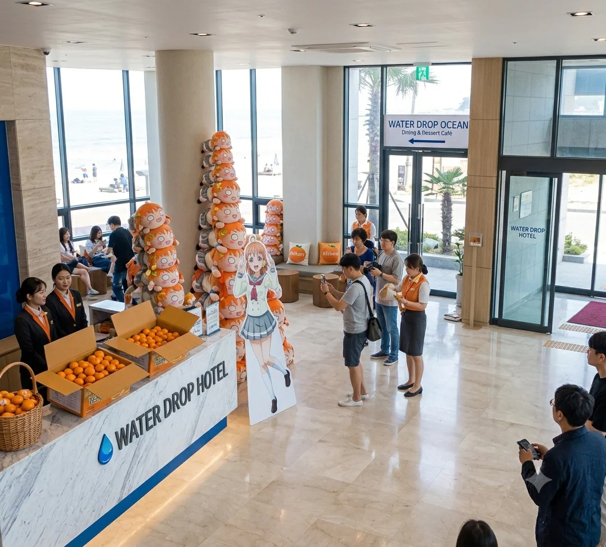
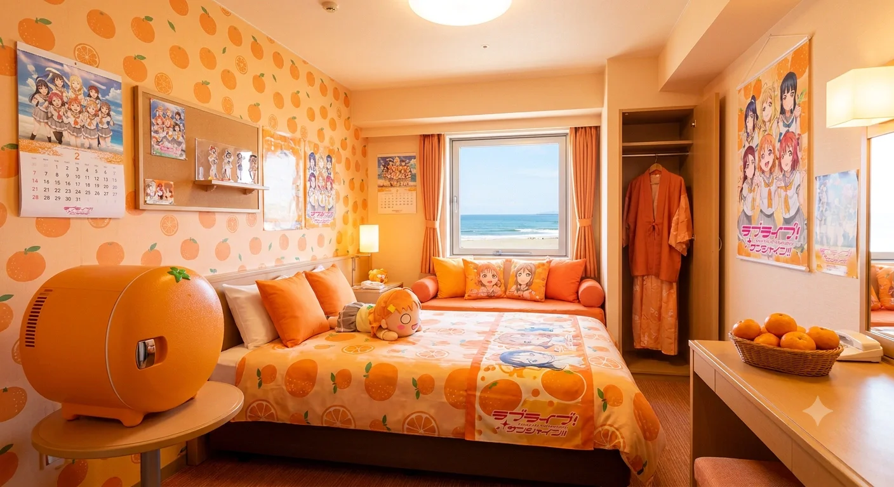
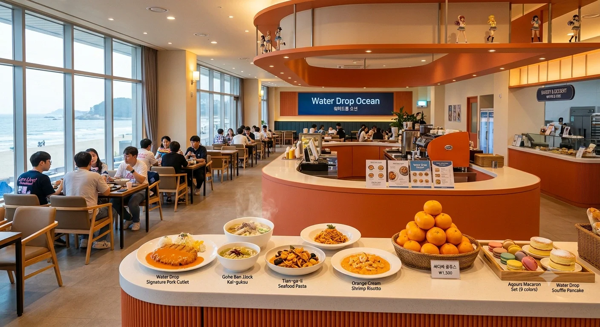
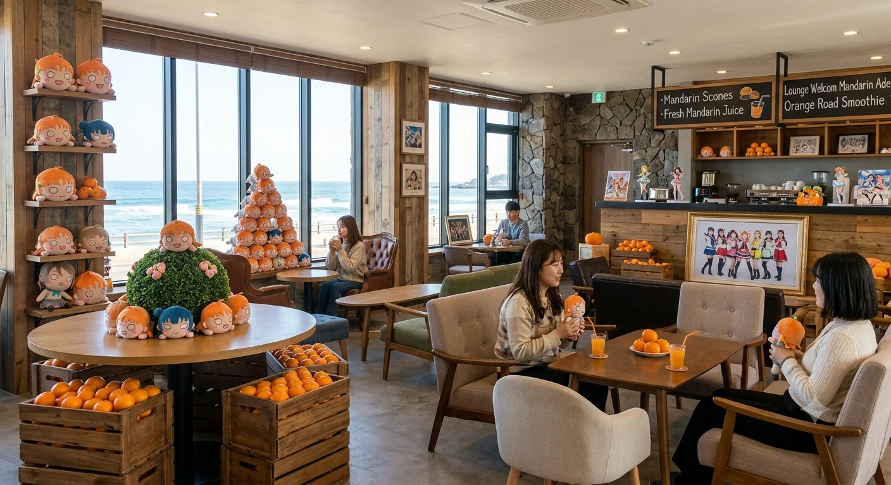
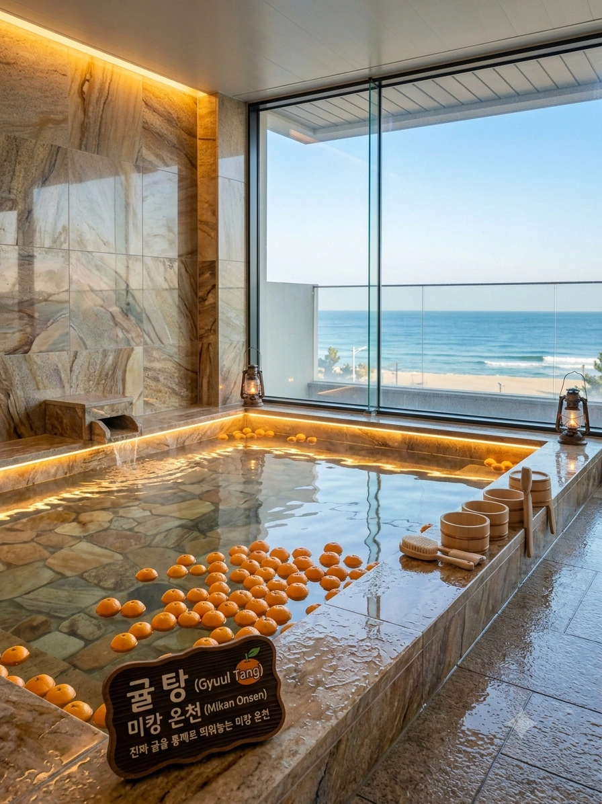
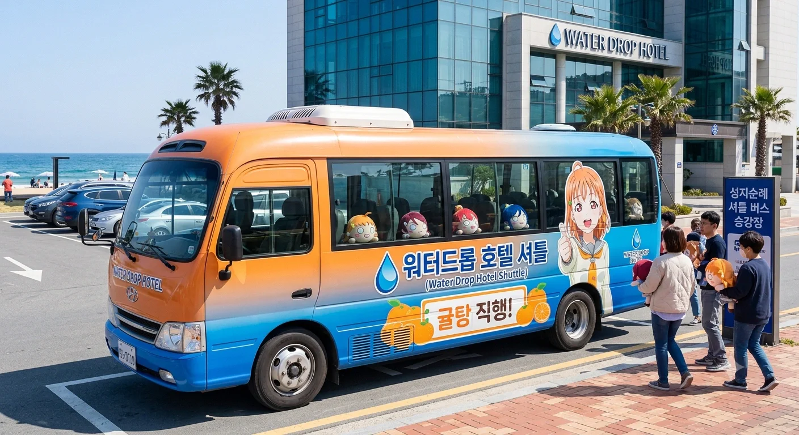

효빈광역시 탄성군 고해읍 천가리에 위치한 2성급 로컬 관광호텔. 고해영의 부친인 고석연 지배인이 운영 중이며, 자타공인 효빈시 서브컬처 성지순례의 알파이자 오메가다.
원래는 평범한 해수욕장 근처 호텔이었으나, 2016년 방영된 《러브 라이브! 선샤인!!》 이후 지명, 호텔명, 개관일까지 모두 소름 돋게 일치한다는 사실이 발굴되며 초대박이 터졌다. 이후 사장님이 작정하고 시설을 서브컬처 친화적으로 개조하면서 엄청난 흑자를 뽑아내고 있는 자본주의와 덕심의 결정체다.
워터드롭 호텔이 서브컬처의 성지로 군림할 수 있었던 데에는 범상치 않은 멘탈과 능력을 지닌 직원들의 공이 크다. 일반 호텔리어의 마인드로는 감당할 수 없는 엄청난 텐션과 오타쿠들의 기행을 웃으며 받아치는 진정한 정예 요원들로 구성되어 있다.
호텔 1층 로비에 들어서면 이곳이 평범한 숙박업소가 아님을 단번에 알 수 있다. 넓은 통유리창 너머로 탁 트인 고해해수욕장이 보이는 아름다운 로비지만, 내부 인테리어는 그야말로 귤과 네소베리의 대환장 파티다.

총 객실 수는 108개. 2016년 애니메이션 방영 이후 폭발적인 수요에 맞춰, 전체 객실의 3분의 2에 달하는 72개 객실을 아예 '치카 테마'로 뜯어고쳐 버렸다. (반응은 폭발적이다 못해 예약 대란이 일어날 정도다.) 각 객실 등급은 철저한 자본주의에 입각해 다음과 같은 디테일로 나뉜다.

호텔 수입의 절반 이상을 책임지는 1층의 초대형 식당 겸 카페. 파티시에 삼촌과 주방장들이 뼈를 갈아 넣어 만든 30가지의 광기 서린 메뉴를 자랑한다. 특히 '싸다싸 귤쥬스'는 마진을 포기한 미끼 상품이며, 나머지 음식들로 폭리를 취하는 구조다.

사진에서 보이듯 식당 내부는 경쾌한 오렌지색 곡선형 카운터와 따뜻한 화이트톤으로 꾸며져 있다. 천장에 설치된 라운드형 오렌지 선반 위에는 Aqours 멤버들의 미니 피규어들이 앙증맞게 장식되어 있어 디테일을 살렸다. 카운터 앞쪽에는 시그니처 메뉴 모형들이 진열되어 있는데, 육즙 가득한 '워터드롭 시그니처 돈까스', 지역 명물 '고해 반쪽 칼국수', '천가리 해물 파스타', 밥알이 노란 '오렌지 크림 새우 리조또', 푹신한 '워터드롭 수플레 팬케이크', 그리고 멤버별 퍼스널 컬러를 완벽히 구현한 '아쿠아 마카롱 세트 (9색)'가 식욕을 자극한다. 그리고 그 중심에는 '싸다싸 귤쥬스(₩1,500)'를 만들기 위한 진짜 귤들이 바구니에 산처럼 쌓여 있다. 한쪽 통유리창으로는 푸른 고해해수욕장이 훤히 내다보여, 눈과 입이 모두 즐거운 지역 최고 맛집으로 군림하고 있다.
1층 프론트 데스크 옆에 위치한 투숙객 전용 라운지. 원래는 평범하게 바다를 보며 커피를 마시는 클래식한 공간이었으나, 지금은 투숙객들이 기증하고 간 굿즈와 인형들이 귤과 함께 묘한 조화를 이루는 아늑한 덕후들의 쉼터로 변모했다. 커피를 극혐하는 고해영의 입김 덕분인지 음료 라인업이 귤 위주다.

라운지 내부는 거친 질감의 돌벽과 따뜻한 빈티지 우드 기둥이 어우러져 아늑한 산장 같은 느낌을 준다. 창밖으로는 해수욕장의 하얀 파도가 부서지는 완벽한 오션뷰가 펼쳐진다. 곳곳의 나무 선반과 탁자 위에는 수많은 치카 네소베리들이 빼곡히 장식되어 있고, 중앙의 둥근 테이블 위에는 네소베리들이 동그랗게 모여 정모를 하고 있다. 바닥에 놓인 나무 궤짝에는 역시나 신선한 귤이 박스째로 넘쳐난다. 주문 카운터 뒤쪽 흑판에는 'Mandarin Scones', 'Fresh Mandarin Juice' 메뉴가 분필로 적혀 있고, 커피 머신 앞에는 Aqours 1학년 멤버들의 대형 액자가 당당하게 세워져 있어 이곳이 훌륭한 성지임을 다시 한번 각인시킨다. 푹신한 패브릭 소파에 앉아 귤 주스를 마시며 네소베리를 끌어안고 있는 투숙객들의 모습은 평화로움 그 자체다.
2성급임에도 개관 때부터 환상적인 노천온천 시설을 갖추고 있다. 특히 성지화 이후 대욕장에 진짜 귤을 통째로 동동 띄워놓는 '귤탕(미캉 온천)'을 신설했다. 상큼한 귤 향기를 맡으며 노천욕을 즐길 수 있어 투숙객들의 극찬이 쏟아지며, 겨울철에는 이 귤탕에 들어가기 위해 예약 경쟁이 벌어진다.[3]

사진만 봐도 감탄이 절로 나오는 환상적인 뷰를 자랑한다. 최고급 대리석과 자연석으로 마감된 넓은 탕 내부로 미세한 조명이 은은하게 비추며, 탕 수면 위로 수십 개의 진짜 귤이 둥둥 떠다니며 상큼한 향기를 내뿜는다. 탕 한쪽에는 "귤탕 (Gyuul Tang) / 미캉 온천 (Mikan Onsen) 진짜 귤을 통째로 띄워놓는 미캉 온천"이라고 적힌 묵직한 나무 안내판이 놓여 있다. 탕의 경계선을 따라 가지런히 놓인 전통 목재 바가지와 의자, 빈티지한 호롱불 랜턴이 일본 료칸 못지않은 고급스러운 분위기를 연출한다. 무엇보다 바닥부터 천장까지 이어진 거대한 전면 통유리창을 통해, 고해해수욕장의 끝없는 푸른 바다와 파도, 모래사장이 한 폭의 그림처럼 펼쳐져 완벽한 개방감과 힐링을 선사한다.
현재 워터드롭 호텔이 3성급 승급을 노리고 야심 차게 공사 중인 구역.
한국 호텔 등급 심사 기준상 3성급 이상을 받으려면 '연회장'이나 '국제 회의장' 같은 부대시설이 필수적이다. 밀려드는 관광객 수요에 맞춰 호텔의 체급을 올리기 위해 지하 1층과 지상 2층 일부를 터서 중대형 연회장을 신설하고 있다.
제22대 국회의원 선거 기간 중, 꼰대 정치인 정철규가 3성급 심사를 준비 중인 이 호텔에 불쑥 들이닥쳐 "3성급 고급 호텔을 할 거면 이런 씹덕 같은 만화 색채나 당장 지워라! 정신병자 수용소냐!"라며 로비 한복판에서 깽판(지랄)을 친 대형 사건. 이에 극대노한 고해영이 바보털을 빳빳하게 세우며 "우리 호텔은 이게 근본인데 무슨 개소리냐! 당장 방 빼라 캉캉!!"이라며 사자후로 맞서 싸웠다. 이 사건을 계기로 고해영이 '정철규 타도 청년 연대'의 선봉에 섰고, 결과적으로 정철규가 득표율 3위(9.33%)로 완벽하게 폭망하는 도화선이 되었다.
위의 애니 탄압 사태와 같은 날 벌어진 연쇄 만행. 정철규는 식당 코너에서 불티나게 팔리는 '싸다싸 귤쥬스'의 라벨을 보더니, "이름이 '싸다싸'가 뭐냐! 장난치는 것도 아니고, 이거 식약처 허가 안 받은 불량식품 아니냐! 당장 영업 정지시켜!"라며 파티시에 삼촌을 향해 고함을 치고 삿대질을 했다. 이에 빡친 고해영이 즉각 "탄성군 특산물 100% 생귤 착즙에 구청 위생과 허가증 다 붙어있는데 눈깔이 삐었냐 큥!! 한 번만 더 우리 삼촌한테 소리치면 영업방해로 고소장 날린다!!"며 맞받아쳤고, 주위 투숙객들도 야유를 퍼부으며 정철규를 쫓아냈다.
선거 유세 막바지, 정철규는 앙심을 품고 자신의 대형 확성기 유세 차량을 호텔 정문 투숙객 드롭오프 존(Drop-off Zone)에 불법 주차한 뒤 선거 로고송을 쾅쾅 틀어대는 테러를 감행했다. 심지어 로비 안을 들여다보며 "내가 서장 출신이야! 저기 로비에 널브러진 음란하고 징그러운 인형들(치카 네소베리) 당장 압수수색 영장 가져와서 다 치워버릴 테다!"라는 법률적 지식조차 상실한 치매급 망언을 쏟아냈다. 이에 고석연 지배인(해영 아빠)이 실시간으로 변호사에게 전화를 걸어 사유지 무단 침입과 영업방해 건으로 내용증명을 날렸고, 로비에 있던 Aqours 오시 어벤져스 멤버들이 팔짱을 끼고 스크럼 인간 벽을 만들어 유세 차량을 완벽하게 밀어내 버렸다.
가장 어이없었던 코미디 같은 사건. 호텔 밖을 서성이던 정철규 캠프 관계자가 노천탕(귤탕)에서 피어오르는 수증기와 오렌지색 불빛을 보고 "저기 불법 퇴폐 마사지 업소를 운영하는 것 같다"는 말도 안 되는 허위 보고를 올렸다. 눈이 뒤집힌 정철규가 위생 점검을 빙자해 남탕 노천구역 문을 벌컥 열어젖히고 난입을 시도했다. 하지만 그곳에는 건강하게 귤을 띄워놓고 평화롭게 온천욕을 즐기던 동네 어르신들과 건장한 순례객 오타쿠들뿐이었다. 분노한 어르신들이 "어딜 함부로 쳐들어오냐 이 썩을 놈아!"라며 뜨거운 바가지 물과 귤껍질을 투척했고, 정철규는 온몸이 다 젖은 채로 굴욕적으로 도망쳐야만 했다.
낙선 위기감에 몰린 정철규가 급기야 호텔 건너편 횡단보도에서 "애니메이션 질병, 오타쿠 척결하여 청정 탄성 지키자!"라는 피켓을 들고 1인 시위를 벌이는 기행을 펼쳤다. 이를 본 고해영은 참지 않고 호텔 창고에서 초대형 메가폰(확성기)과 앰프를 끌고 나와 호텔 정문에 세팅했다. 그리고는 Aqours의 라이브 콘서트 음원을 최대 볼륨으로 쾅쾅 틀어버리고, 정철규를 향해 "캉캉 미카아아앙!! 정철규 방 빼라 큥!!"을 쉴 새 없이 외쳐버렸다. 정철규의 목소리는 완벽하게 묻혀버렸고, 지나가던 시민들은 고해영이 나눠주는 귤을 까먹으며 정철규를 삿대질하고 비웃었다.
효빈시 3대 세력 중 하나인 당가동 리에라몰 일가(임은혜 가족)가 어벤져스와의 동맹을 핑계로 워터드롭 호텔 최상위 등급인 '로열 스위트'와 '패밀리 스위트' 여러 채를 통째로 빌려 초호화 숙박을 즐긴 레전드 사태다.
압권은 임은혜가 완벽한 후지시마 메구미 코스프레(혹은 평소와 똑같은 메구미 그 자체인 일상복)를 하고 호텔 로비와 라운지, 심지어 귤탕 입구까지 활보하고 다닌 것이었다. 하필 이날 호텔에는 성지순례를 온 러브라이버들이 가득했는데, 살아 숨 쉬는 3D 현실판 메구미(임은혜)가 "어머머~ 해영 언니 큥!! 여기 호텔 진짜 짱이다 큥💖"이라며 뛰어다니자, 로비에 있던 후지시마 메구미 오시 투숙객들이 충격과 환희에 휩싸여 그 자리에서 실신(기절)하는 대참사가 속출했다.
여기에 고해영까지 가세해 치카와 메구미의 콜라보레이션으로 "캉캉 큥큥!!" 오디오 테러를 일으키자 호텔 전체가 뒤집어졌다. 딸의 광기 어린 활약(?)을 지켜보던 임은혜의 아버지 임세혁(리에라몰 점장)은 고석연 지배인에게 흔쾌히 엄청난 팁을 찔러주고 식당의 '싸다싸 귤쥬스'를 전량 매수하여 투숙객들에게 골든벨로 돌리며, 자본주의로 하나 된 완벽한 연합을 과시했다.
원래 직역인 '싸다야'가 어감이 구려 '싸다싸'로 런칭했는데, 진짜로 이름값을 하느라 강제로 가격을 후려치면서 주방 파티시에 삼촌이 과로와 귤 껍질 까기 지옥에 갇혀 쓰러질 뻔한 사건. 다행히 마진율이 높은 다른 디저트들의 폭리로 메꿨다.
2016년 애니메이션 방영 직후, '진짜 고해 천가에 호텔이 있다'는 소문을 듣고 전국에서 몰려든 오타쿠들로 인해 호텔 로비와 예약 서버가 일시적으로 마비된 적이 있다. 고석연 지배인이 이때 돈 냄새를 짙게 맡았다고 전해진다.
스트리머 임은혜가 워터드롭 호텔 로비 한복판에서 야외 브이로그 라이브 방송을 켰을 때 벌어진 전설의 대참사다. 은혜는 머리부터 발끝까지 완벽한 '후지시마 메구미' 하얀색 교복 코스프레를 한 채로 대형 링 라이트 조명과 삼각대를 무작정 설치했다. 카메라가 켜지자마자 은혜가 "여러분! 오늘은 저의 영혼의 쌍둥이 언니가 있는 성지에 왔어요 큥💖"이라며 윙크를 날리고 잔망을 떠는 순간, 데스크에서 프론트 알바를 보던 고해영의 레이더망에 이 모습이 포착되었다.
해영은 자신의 본분인 '호텔 직원으로서의 품위'를 단 1초 만에 내다 버리고, 체크인 중이던 손님을 내팽개친 채 미친 듯이 달려와 카메라 프레임 안으로 몸을 날렸다. 그리고는 은혜의 어깨를 꽉 쥐고 "캉캉 미카아아앙!! 은혜당 구독 꾹꾹!! 다들 여기 와서 싸다싸 귤쥬스 마시라 큥!!"을 외쳐대며 시청자들의 고막을 물리적으로 완벽하게 파괴해 버렸다. 두 사람의 텐션이 시너지를 일으켜 데시벨이 폭발하자, 로비에 있던 일반 투숙객들은 단체로 귀를 틀어막으며 고통을 호소했다.
하지만 이 합방 덕분에 은혜당 채널의 동시 시청자 수는 순식간에 2만 명을 돌파하며 역대급 신기록을 경신했다. 멀리서 이 아수라장을 지켜보던 해영의 아빠(고석연 지배인)는 방송의 파급력과 어마어마한 광고 효과(돈 냄새)를 직감하고는, 딸을 말리기는커녕 오히려 로비의 일반 투숙객들에게 직접 1만 원짜리 '워터드롭 뷔페 식사권'과 생귤 주스를 돌리며 입막음(자본주의 보상)을 시전했다. 결국 이 대환장 라이브는 호텔 매출을 당월 30%나 끌어올리는 효자 방송이 되었다.
워터드롭 호텔과 업무 제휴를 맺은 중구의 친척 호텔 토치만 호텔 사장님은 지독한 '마츠우라 카난' 오시(최애)다. 어느 날 밤, 사장님은 자신의 집에 더 이상 보관할 데가 없는 거대한 카난 굿즈 박스들을 워터드롭 호텔의 지하 창고에 몰래 밀반입하여 숨겨두려는 치밀한 야반도주 작전을 세웠다. 그는 업무 미팅을 구실로 대형 벤을 끌고 와 야간 주차장에서 박스를 은밀하게 나르기 시작했다.
하지만 불행하게도 야간 순찰(사실은 땡땡이) 중이던 고해영의 매의 눈을 피할 수는 없었다. 수상한 낌새를 챈 해영이 세관 검사관에 빙의하여 커터칼로 강제로 박스를 뜯어버렸고, 그 안에서 2미터짜리 거대 카난 태피스트리와 잠수복 프롭, 초록색 네소베리 한 뭉탱이가 와르르 쏟아져 나왔다.
사태를 파악한 해영은 정수리의 바보털을 빠짝 세우며 극대노했다. "삼촌 미쳤어?! 여긴 치카의 성지야!! 신성한 오렌지색 구역에 감히 초록색 미역 머리를 들이밀어?! 당장 안 빼 캉캉!!" 해영이 사자후를 토하며 박스를 발로 차기 시작하자, 사장님도 "야 이 쪼그만 귤탱아! 형님(고 지배인)한테 월세 낼 테니까 한 구석만 쓰자고! 카난 쨩이 얼마나 위대한지 네가 알아?!"라며 유치찬란한 '오시(최애) 배틀'을 벌였다. 결국 소란을 듣고 내려온 고 지배인이 단호하게 반입 불가 판정을 내리자, 토치만 사장님은 눈물을 머금고 굿즈 박스를 껴안은 채 중구 조유동으로 씁쓸히 차를 돌려야 했다. 이 사건 이후 해영은 지하 창고 입구에 '초록색(카난) 반입 금지' 경고문을 대문짝만하게 붙여놓았다.
Aqours 오시 어벤져스 멤버들(해영, 이리자, 도선요, 송과영, 석다연)이 그동안의 자경단 활동에 대한 포상으로 워터드롭 로열 스위트를 통째로 빌려 휴가를 즐기던 날 발생한 레전드 사이다 사건이다. 이들은 객실 야외 발코니에 딸린 프라이빗 노천 귤탕에서 바다를 보며 귤을 까먹고 평화롭게 몸을 지지고 있었다.
그런데 바로 옆 객실의 발코니에서 무개념 진상 투숙객(30대 남성)이 난간 너머로 몰래 스마트폰 카메라를 들이밀고 불법 촬영을 시도하는 끔찍한 짓을 저질렀다. 플래시가 터지는 미세한 반사광을 눈치챈 것은 어벤져스 최고의 '다이빙 피지컬 몬스터' 송과영이었다. 과영은 탕에서 첨벙! 소리와 함께 돌고래처럼 허공으로 솟구쳐 올랐다. 물안경을 쓴 채로 압도적인 광배근을 뽐내며 진상남을 죽일 듯이 째려보는 과영의 살기에 남자는 기겁하여 스마트폰을 떨어뜨릴 뻔했다.
뒤이어 로스쿨생이자 팩폭 담당인 석다연이 Aqours 로고가 박힌 대형 타월을 차갑게 두르며 난간 앞으로 다가왔다. 다연은 특유의 서늘한 눈빛으로 점을 씰룩거리며 조곤조곤 속사포를 쏟아냈다. "성폭력범죄의 처벌 등에 관한 특례법 제14조 카메라 등을 이용한 촬영죄 위반, 현행범으로 경찰에 넘겨드릴까요? 당신 휴대폰 압수수색 들어가서 포렌식 돌리면 당신 직장과 인생이 어떻게 끝장날지 제가 완벽한 법적 사형선고를 내려드릴 수 있습니다. 뿟뿌 데스와!"
물리적인 살기(과영)와 법적인 참교육(다연)이 동시에 들어오자 혼비백산한 진상범은 그 자리에서 싹싹 빌며 사진을 모두 지우고 초기화까지 시켰다. 그는 사과를 연발하며 도망치듯 방을 나갔는데, 복도를 뛰어가다 해영이 뱉어놓은 귤껍질을 밟고 미끄러져 뇌진탕 직전까지 가는 화려한 슬랩스틱을 선보이며 완벽하게 호텔에서 빤스런했다.
효빈 애니메이션 페스티벌(HAF) 기간 중, 워터드롭 호텔은 전국에서 몰려든 코스플레이어들의 베이스캠프로 쓰이고 있었다. 행사가 끝난 저녁, 호텔 1층 로비에서 한 코스어 투숙객이 이동 중 어디선가 옷자락이 심하게 찢어지는 바람에 바닥에 주저앉아 엉엉 울고 있는 안타까운 상황이 벌어졌다. 비싼 의상이 완벽하게 두 동강이 나버려 내일 행사에 갈 수 없게 된 것이다.
이때 마침 정모 차 호텔 라운지에 들렀던 효빈예대 의상학과 출신의 재봉틀 마술사 도선요가 상황을 발견했다. 선요는 빛의 속도로 달려와 자신의 안경을 척 치켜올리며 "전속 전진 요소로! 나한테 맡겨!"를 외쳤다. 선요는 프론트 데스크에서 비상용 반짇고리 세트를 낚아챈 뒤, 로비 소파에 코스어를 앉혀놓고 신들린 손놀림을 보여주기 시작했다. 바늘이 보이지 않을 정도의 엄청난 스피드로 시침질과 감침질을 번갈아 구사하며 단 3분 만에 찢어진 제복의 솔기를 새 옷처럼 완벽하게 가봉 처리해 버린 것이다.
완벽하게 복원된 의상을 입어본 코스어는 감격의 눈물을 펑펑 흘리며 선요의 두 손을 덥석 잡고 "바느질의 여신님!"이라며 오열했다. 이 기적 같은 3분 수선 쇼를 숨죽여 지켜보던 주변의 수십 명의 오타쿠 투숙객들은 환호성을 지르며 기립 박수를 쳤고, 선요에게 감사의 뜻으로 자신들이 산 고급 제주 감귤 한 박스를 즉석에서 조공으로 바치는 진풍경이 벌어졌다. (정작 호텔이 있는 탄성군이 귤 산지인데 제주 귤을 바친 것이 개그 포인트다.)
프론트 데스크에 진상 냄새를 짙게 풍기는 50대 아저씨가 나타났다. 그는 방에 비데가 없고 오렌지색 벽지가 눈이 아프다며 애꿎은 20대 신입 프론트 직원에게 막무가내로 쌍욕을 퍼붓고 삿대질을 해대고 있었다. 마침 비번 날 편한 사복 차림으로 호텔 라운지에 들러 샌드위치(오이와 계란이 듬뿍 든)를 뜯어먹고 있던 현직 간호사 이리자의 심기를 건드리고 말았다.
이리자는 먹고 있던 샌드위치를 조용히 내려놓고, 겉옷 재킷을 천천히 벗으며 프론트로 다가갔다. 진상 아저씨가 "넌 뭐야 이 기지배야!"라고 소리치려는 찰나, 이리자는 말 한마디 없이 아저씨 얼굴 바로 옆 1cm 간격의 대리석 기둥을 향해 전설의 '쾌감펀치'를 퍽!! 소리가 로비를 쩌렁쩌렁 울리게 꽂아버렸다. 병원 응급실과 웬수 같은 남동생을 패면서 다져진 그녀의 주먹은 대리석에 미세한 금을 낼 정도로 압도적인 파괴력과 소음을 냈다.
고막이 찢어질 듯한 타격음과 뺨을 스치는 서늘한 주먹의 풍압, 그리고 이리자의 차가운 살기 어린 눈빛에 압도당한 진상 아저씨는 단 1초 만에 분노 조절 장애가 완치되는 기적의 '물리치료'를 경험했다. 핏기가 가신 아저씨는 사시나무 떨듯 떨며 "조, 죗... 죄송합니다!"를 연발하고는 황급히 짐을 싸서 체크아웃하고 도망쳐버렸다. 상황이 정리되자 이리자는 핏방울 하나 안 묻은 손을 털며 다시 라운지로 돌아가 남은 샌드위치를 마저 씹어 먹었고, 이를 지켜보던 직원들은 그녀를 '프론트의 수호신'으로 모시게 되었다.
워터드롭 호텔 로비 정중앙에는 무려 3미터 높이로 쌓아 올린 위태로운 '점보 치카 네소베리 탑(약 50개)'이 존재한다. 어느 한가로운 오후, 자본주의 스폰서 임은혜가 이 네소베리 탑을 배경으로 유행하는 틱톡 댄스 챌린지('Miracle STAY TUNE!')를 열심히 찍고 있었다. 그런데 안무 중 팔을 너무 크게 휘두른 은혜가 그만 탑의 가장 하단에 있는 기둥 네소베리를 퍽 쳐버리는 대형 사고를 치고 말았다.
무게 중심을 잃은 거대한 네소베리 탑이 슬로 모션처럼 무너지기 시작했다. "안 돼 내 귤대장들 큥!!"이라는 고해영의 찢어지는 비명이 로비에 울려 퍼짐과 동시에, 근처에 널브러져 있던 어벤져스 멤버들(이리자, 도선요, 송과영)의 신체가 본능적으로 반응했다. 마치 액션 영화의 한 장면처럼 세 사람은 바닥을 박차고 허공으로 몸을 날렸다.
송과영은 바닥에 닿기 직전의 네소베리들을 슬라이딩으로 받아쳐 위로 띄워 올렸고, 도선요는 양팔로 네소베리 8개를 한 번에 끌어안았으며, 이리자는 떨어지는 인형들을 발등으로 트래핑하여 머리 위에 얹는 기염을 토했다. 무려 50개의 점보 네소베리가 와르르 쏟아지는 와중에, 단 한 개의 네소베리도 바닥의 대리석에 닿지 않도록 공중에서 모조리 캐치해 내는 미친 기인열전(서커스)이 펼쳐진 것이다.
마지막 인형까지 무사히 품에 안착시키고 세 사람이 완벽한 랜딩 포즈를 취하자, 숨을 죽이고 이 광경을 지켜보던 수십 명의 로비 투숙객들은 마치 '태양의 서커스' 공연을 본 것처럼 우레와 같은 기립 박수와 환호를 보냈다. 십년감수한 고석연 지배인은 식은땀을 닦으며 이들의 동체시력과 피지컬에 경의를 표하며 특별 뷔페 무료 식사권을 그 자리에서 하사했다. 사고를 친 은혜는 쭈구리가 되어 네소베리를 다시 쌓는 노역을 해야 했다.
탄성군 일대를 순환하는 마을버스와 농어촌버스가 호텔 앞 정류장에 정차한다. 주로 고해해수욕장이나 탄성군 내륙으로 들어가는 노선들이다.

사진의 버스는 워터드롭 호텔이 자랑하는 '성지순례 셔틀버스(현대 카운티)'다. 일반적인 관광버스의 외형을 완벽하게 포기하고, 일몰을 연상시키는 강렬한 오렌지와 블루 그라데이션으로 전면 도색을 해버렸다. 버스 측면에는 엄청난 크기의 타카미 치카 랩핑 그래픽과 오렌지 일러스트, 그리고 '워터드롭 호텔 셔틀 - 귤탕 직행!'이라는 거대한 문구가 위풍당당하게 박혀 있다. 재미있는 점은 버스 창문마다 네소베리 인형들이 일렬로 줄지어 밖을 내다보며 승객들을 맞이하고 있다는 것이다. 버스 정류장 앞에는 이미 각자의 네소베리를 소중히 안고 있는 오타쿠 순례객들이 설레는 마음으로 버스 탑승을 대기하고 있는 진풍경을 볼 수 있다.
| 효빈광역시 탄성군의 주요 숙박·관광 시설 | |
|---|---|
| 숙박 | 워터드롭 호텔(고해읍) · 탄성 리조트(탄성읍) · 도변 비치호텔(도변읍) |
| 관광 | 고해해수욕장 · 탄성 귤 농장 체험장 · 오렌지 로드 성지순례길 |
| 교통 | 천가역(4호선) · 탄성역(일반철도) |